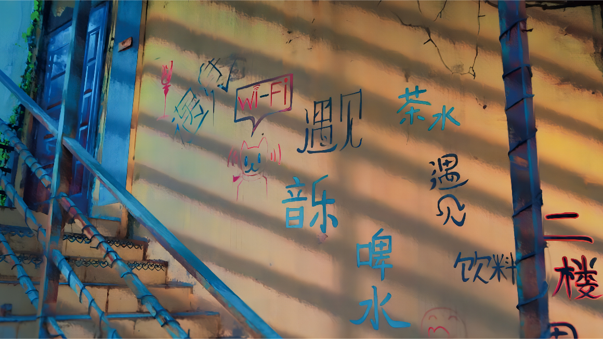
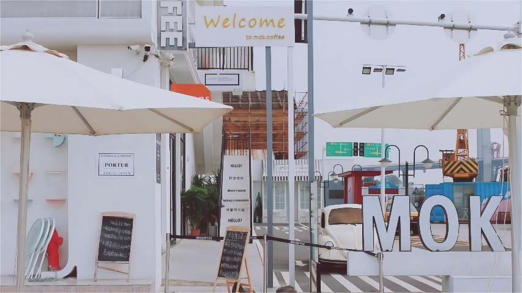
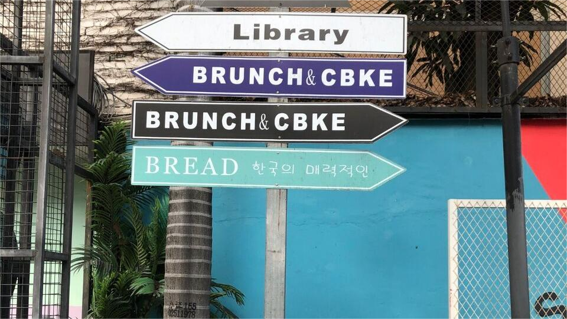

云南大学
M60文化创意园，位于普吉路47号,集艺术家工作室 设计工作室、手工艺人工作室以及概念Loft餐厅、咖啡吧、酒吧等特色创意汇聚的园区。
M60文化创意园，位于普吉路47号，占地面积61.06亩，前身是云南纺织集团的昆明蓄电池厂，是一个见证了曾经业辉煌的老旧厂房。2014年8月，园区发起人与云纺集团达成战略合作协议，由昆明碧眸文化传播有限公司对这座老厂房进行改造。2015年8月，M60文化创意园正式开园。经过园区园运营方的努力，M60已变身为集艺术家工作室 设计工作室、手工艺人工作室以及概念Loft餐厅、咖啡吧、酒吧等特色创意汇聚的园区。 现在的M60文化创意园，正努力发展为西南地区极具代表性的文化创意中心。M60文化创意园现入驻企业类型囊括了广告、设计、摄影绘画、手工艺创意产品(如木艺、皮艺、布艺、刺绣、扎染、陶艺及瓷器修补等云南传统手工艺)以及云南非物质文化遗产传承(如剪纸、刺绣、民族服饰、皮雕、扎染、竹编、树皮制衣)等诸多文化项目。
云南大学地球科学学院@2021~2022